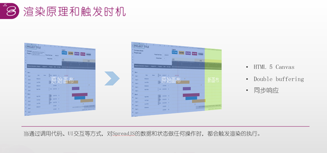
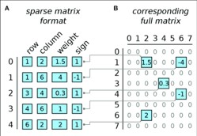
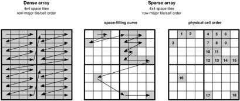
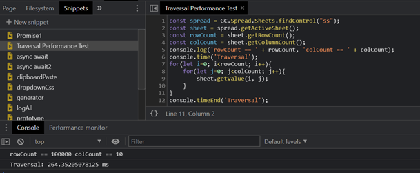

SpreadJS需求解决方案和优势：
当时为了评估是否能够满足我们的需求，约了跟SpreadJS的技术人员的远程会议。当时我们这边一条条提需求，那边就直接演示实现方案，效果非常直观。结合上边说的那些需求，对应的解决方案思路也很清晰：
1、 并发：
由于SpreadJS是数据和模板分离的设计，填报人员只需要在页面上完成填报。提交时可以只提交填报好的数据json即可，服务器再也不用吭哧吭哧地分析Excel文件了。带宽消耗也直接节约了一半。
2、 对Excel操作和兼容性要求较高
在内部试用时，财务和客服的小姐姐们反馈，使用体验跟Excel几乎完全一样，不需要再特意培训。而且我们自己的大量Excel报表可以直接导入进去（二次开发后也可以实现批量和远程导入），包括图表、公式、表格样式等等一系列元素都可以直接导入线上操作。
3、 报表格式灵活多变
设计人员可以直接在线设计，或者把Excel设计好的报表，拿到Web端，做好数据绑定，提交保存成json格式即可（Spread JS的ssjson格式包括Excel文档的所有信息）
4、 支持公式计算
支持了450多种（Excel一共480多种）公式，还可以自己开发扩展自定义公式，对财务也够用了。同时还支持所有Excel的引用操作，比如跨sheet引用、绝对引用、函数命名信息之类。
5、 工作流中的数据文档
基本脱离了对文件的依赖，所有流程状态和依赖的数据都可以在数据库中记录，文件服务器只需要保存少量的模板文档即可（其实模板数量不大时可以直接放到数据库里，不过我们有现成的文件服务器）。这里节约了我们90%文件服务器的空间开销，运维的小伙伴半夜都要笑醒。
深入SpreadJS：
重点来了，其实最让我这个前端开发者感兴趣的就是SpreadJS的一些底层设计、以及对内存、性能平衡性的优化。对此我做了很多调研和学习，好在这方面资料不难找，常常可以在葡萄城官方论坛的公开课版块遇到一些相关的技术分享。下边是自己了解学习到的内容，做个简单总结：
1. 渲染性能：
性能肯定是每个深度表格控件用户最担心的问题。我们的数据量常常达到好几千条，而且Excel不方便分页（涉及前端的公式计算汇总），所以选型期间很担心。后来发现想多了，SpreadJS可以轻松加载50万条数据不喘气（官网性能演示示例只能加载5万，我们自己扒下来测的50万）。后来深入了解才知道，解决这个问题，他们的思路是这样的：
<1> 实时渲染 + Double buffering(翻译成双层缓存？)：
用Canvas渲染表格部分，并且只渲染用户看到的部分内容，这就实现了加载1000行和加载100000行数据速度都很快，性能相差不大的现象。
而Double buffering是为了解决连续渲染的连续性体验问题，也可以进一步提升渲染速度。这个名词估计听过的人少，但应该人人都体验过，Double buffering在游戏里其实很常见，当我们主控的人物在地图上奔跑时，游戏引擎会按照人物移动方向实时加载和渲染地图，这就避免了一次性加载超大地图时那漫长的等待。

图片来源：葡萄城公开课【SpreadJS性能优化】
<2> 稀疏数组：
SpreadJS对表格数据的存储优化采用了稀疏数组的数据结构。稀疏数组常用来优化二维数组（比如棋盘、地图等场景）的内存占用，但它有个天生的缺陷，就是访问性能慢。


所以当时针对这个疑问，我给它做了压力测试，百万级别的遍历耗时200多ms。性能可以满足我们的需求。
